Amagi Mystery · Blender
Дом Амаги v03
Десять дневных рендеров эталонного дома. Нажмите на изображение, чтобы открыть оригинал PNG размером 1440 × 1080.
Дом в окружении
Отдельный тестовый участок с каменной дорожкой, клёном и низкими посадками.

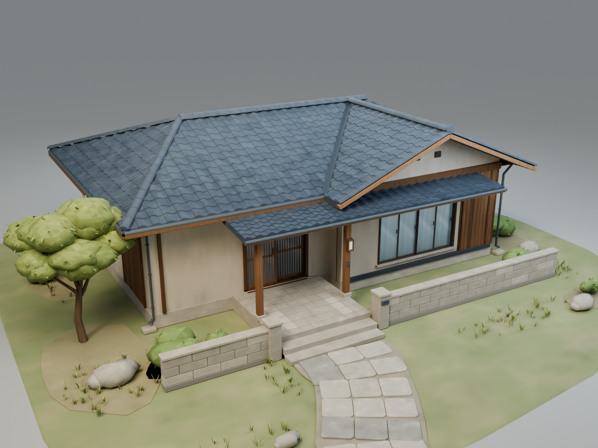

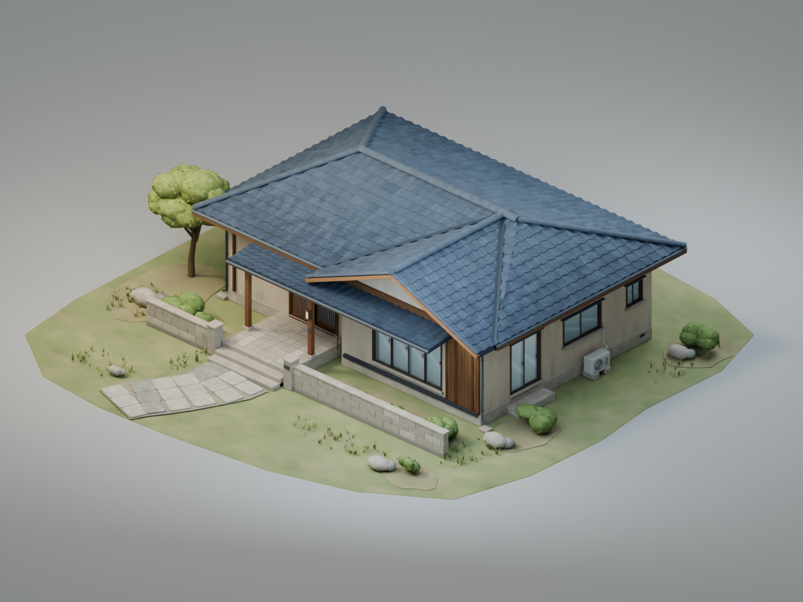
Архитектура

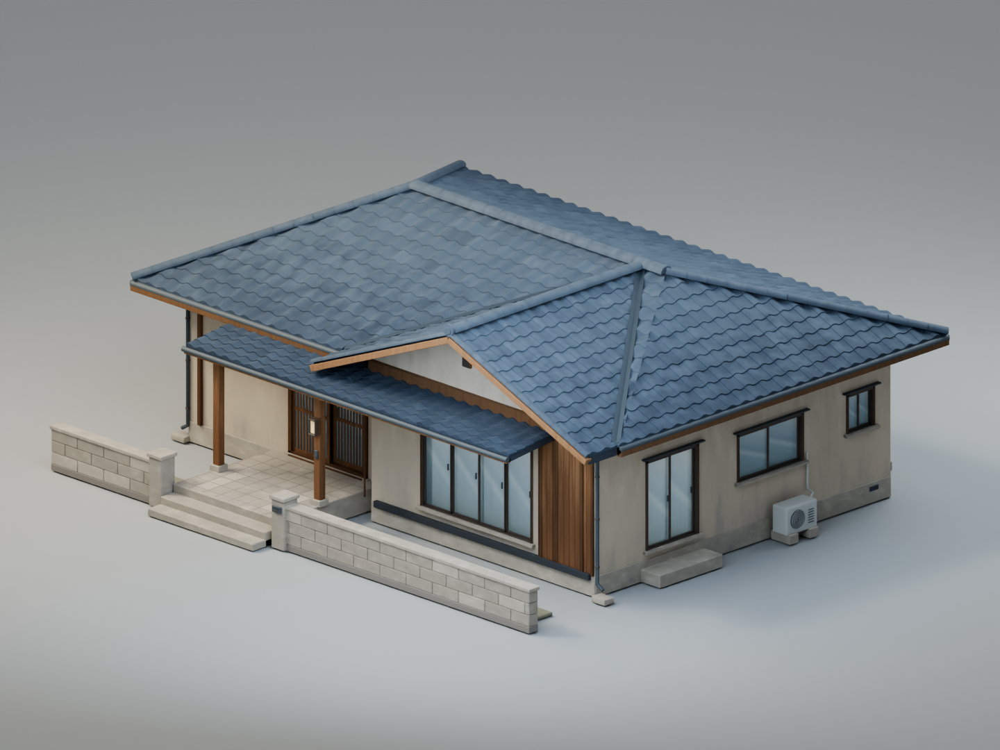

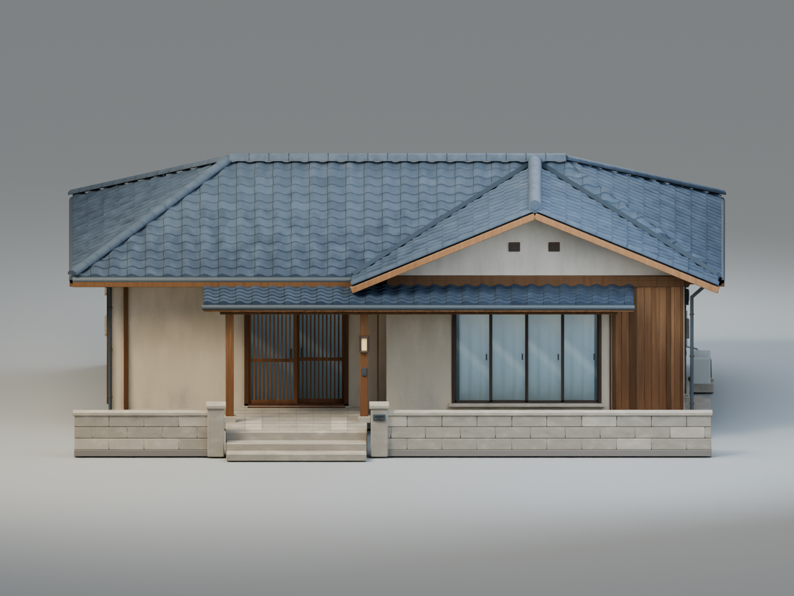

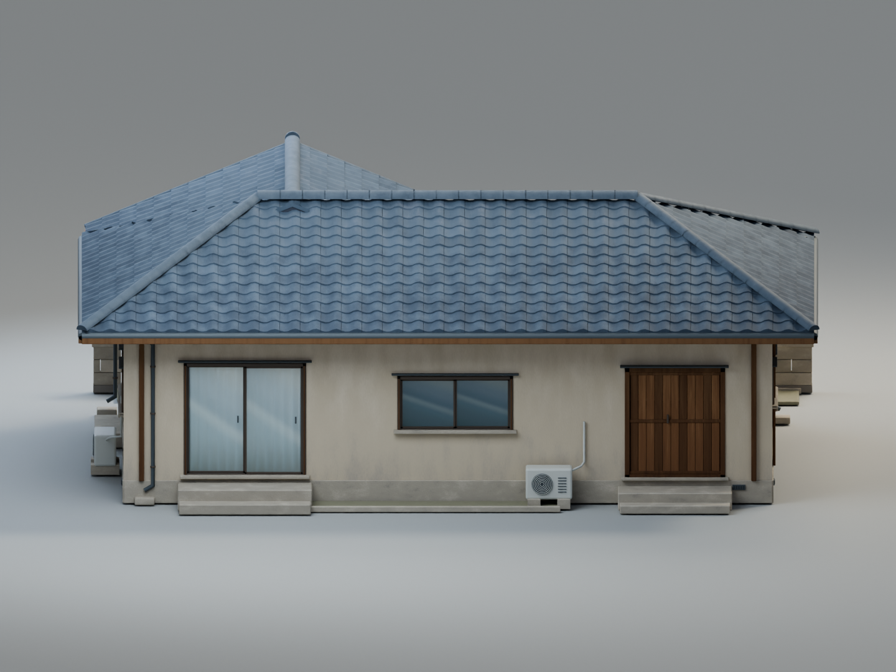

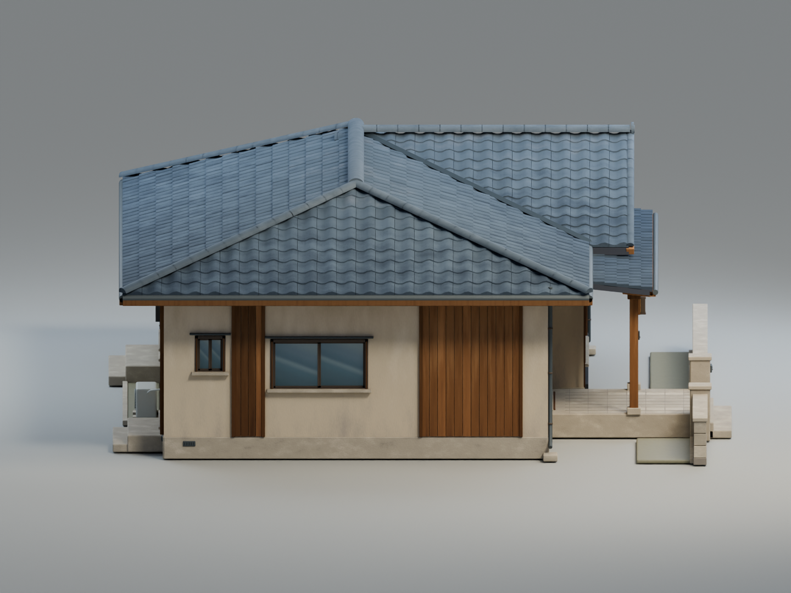

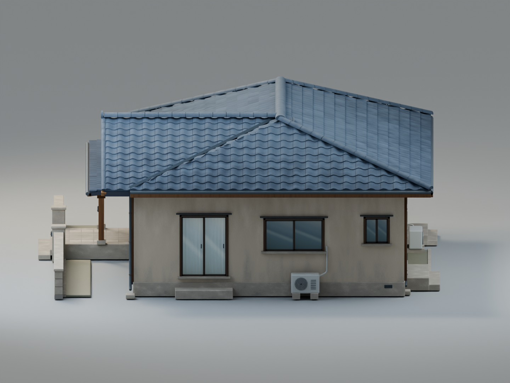

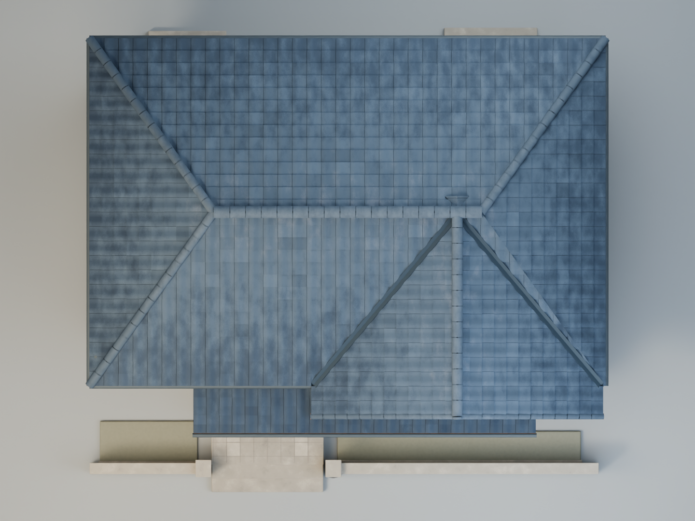
Вход и материалы

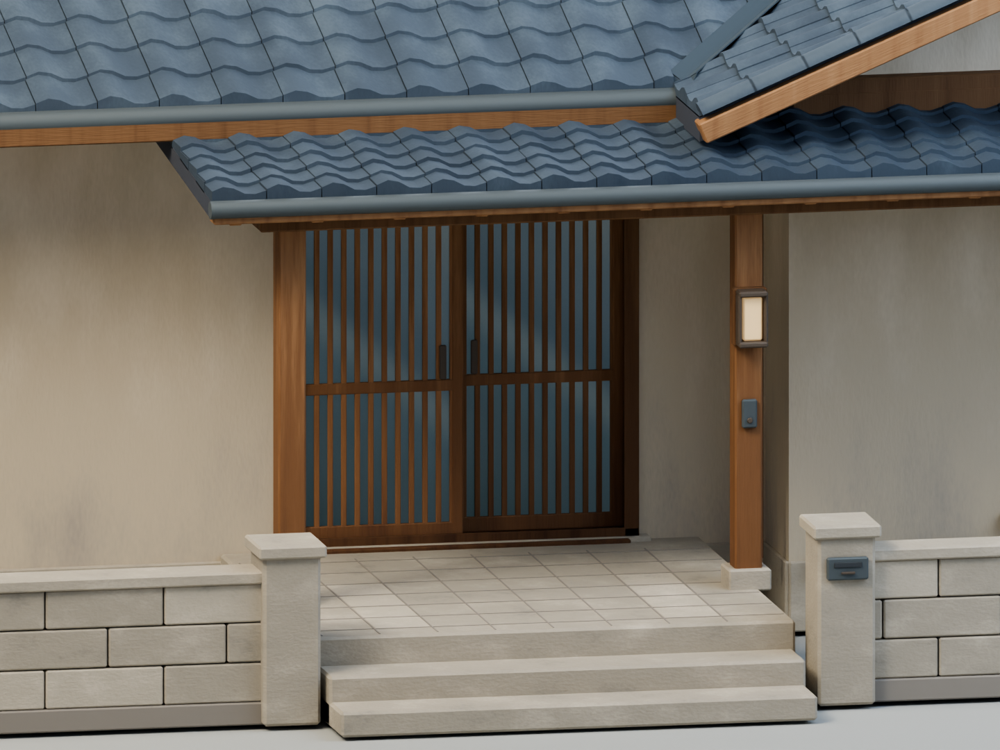

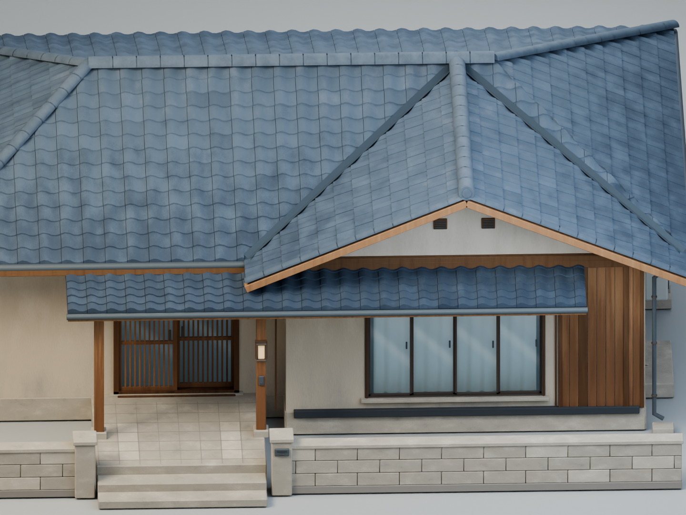
Сравнение v02 и v03
Один ракурс и одинаковое кадрирование. В v03 свет теплее, тени прохладнее, а на черепице, штукатурке и кедре заметнее вариации оттенка. Добавлены отливы и уточнены окончания стыков кровли.

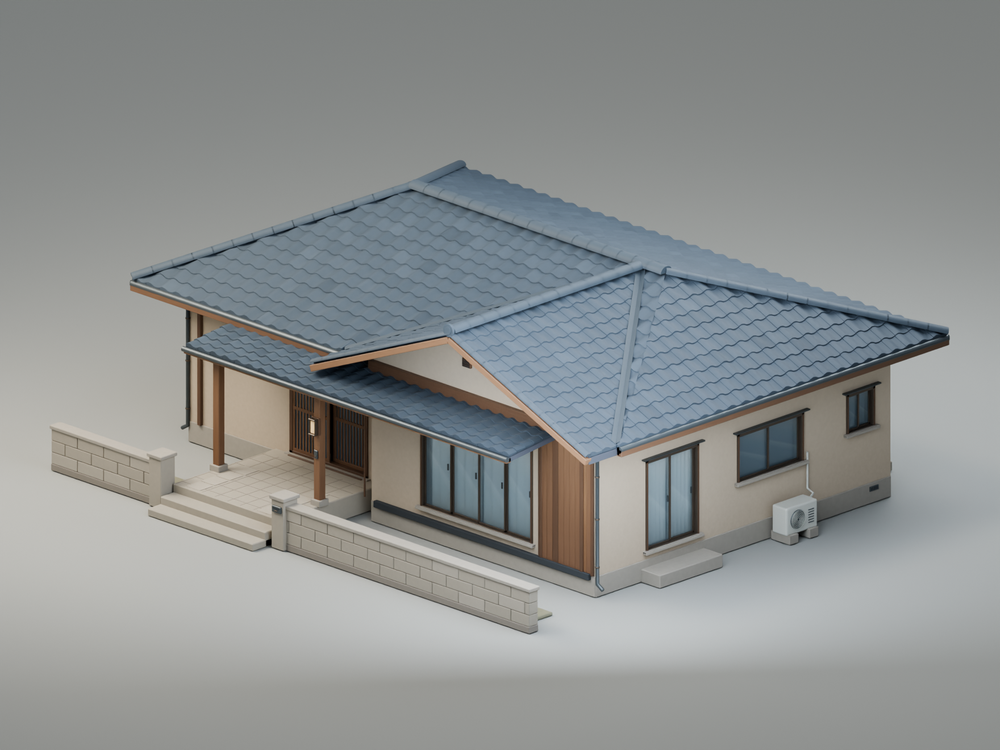